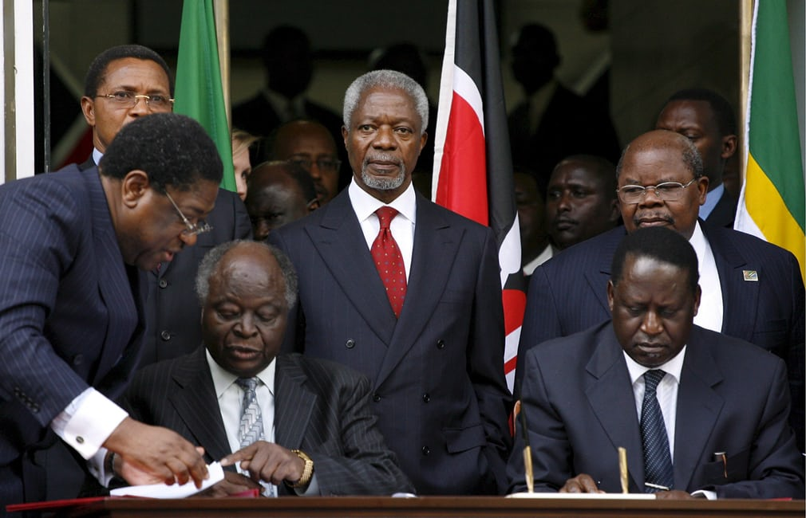

Kofi Annan
”An outstanding human being who represented our continent and the world with enormous graciousness‚ integrity and distinction”

Annan looks on as the then Kenyan president, Mwai Kibaki and opposition leader Raila Odinga sign a contentious power-sharing deal in February 2008.
- 8 April, 1938- Born in Kumasi,Ghana.
- 1954- Kofi Annan attended the elite Mfantsipim school, a Methodist boarding school in Cape Coast founded in the 1870s.
- 1958- Kofi Annan began studying economics at the Kumasi College of Science and Technology, now the Kwame Nkrumah University of Science and Technology of Ghana. He received a Ford Foundation grant, enabling him to complete his undergraduate studies in economics at Macalester College in St. Paul, Minnesota, United States, in 1961.
- 1996- Secretary-General Boutros Boutros-Ghali ran unopposed for a second term. Although he won 14 of the 15 votes on the Security Council, he was vetoed by the United States. After four deadlocked meetings of the Security Council, Boutros-Ghali suspended his candidacy, becoming the only Secretary-General ever to be denied a second term. Kofi Annan was the leading candidate to replace him, beating Amara Essy by one vote in the first round. However, France vetoed Annan four times before finally abstaining. The UN Security Council recommended Annan on 13 December 1996. Confirmed four days later by the vote of the General Assembly, he started his first term as Secretary-General on 1 January 1997.
- 2001- He was awarded the Peace Prize for having revitalized the UN and for having given priority to human rights. The Nobel Committee also recognized his commitment to the struggle to containing the spread of HIV in Africa and his declared opposition to international terrorism.
- 2006- Kofi Annan gave a farewell address to world leaders gathered at the UN headquarters in New York, in anticipation of his retirement on 31 December. In the speech he outlined three major problems of "an unjust world economy, world disorder, and widespread contempt for human rights and the rule of law", which he believes "have not resolved, but sharpened" during his time as Secretary-General. He also pointed to violence in Africa, and the Arab–Israeli conflict as two major issues warranting attentio
- 18 August, 2018- Annan died in Bern, Switzerland, at the age of 80 after a short illness
This is a timeline of Mr Kofi Annans life.
“I sincerely admired his wisdom and courage, his ability to make informed decisions even in the most complex, critical situations.”
--Vladmir Putin--